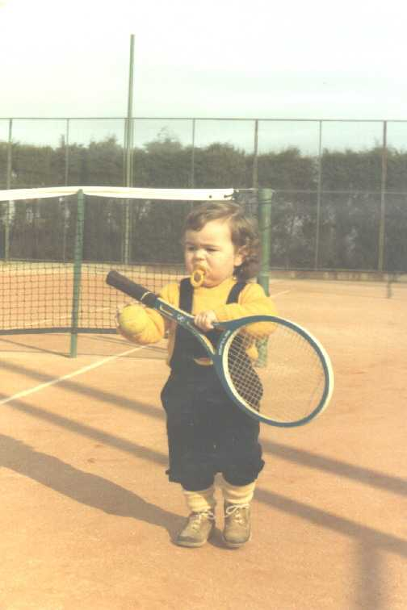
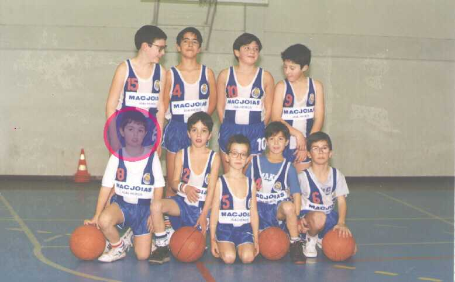
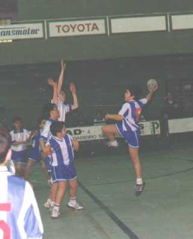
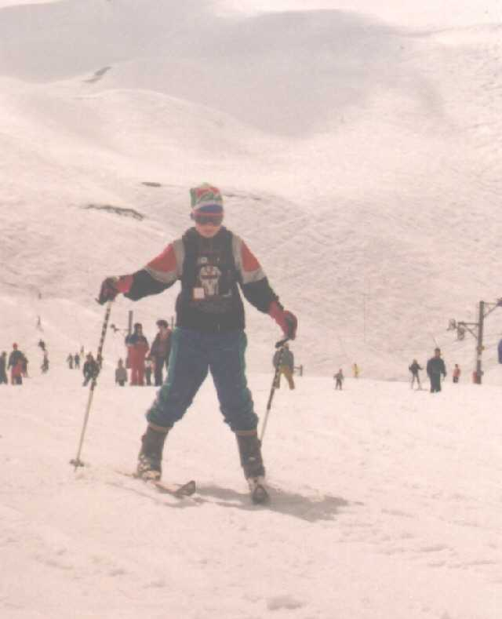

Luís Miguel Morais Torres nasceu no dia 11/06/1981 como demonstra a fotografia aqui atrás, e cedo demonstrou ter capacidades acima da média.
Em Janeiro de 1983, começou a praticar ténis, abandonando mais tarde, para equilibrar mais o panorama mundial deste desporto, depois de ter ganho os quatro torneios do Grand Slam.

Em 1986, desenhou a sua primeira versão do MS-DOS apartir do seu Spectrum, vendendo mais tarde os direitos de comercialização a Bill Gates
Nesse mesmo ano dedicou-se desportivamente ao futebol como guarda-redes, ingressando no Milan. Deixou este desporto um ano depois, após ter ganho o Scudetto e a Bola de Ouro da France Football.

Em 1989, militou no Basquetebol, gerando a maior transferência do basquetebol português (Saiu do FC Porto rumando aos Los Angeles Lakers, onde conquistou o título da NBA, por 2,5 Milhões de Contos)
. 
Nos Estados Unidos, descobriu um novo desporto, o futebol americano. Aí, por intermédio dos Dallas Cowboys venceu o Super Bowl de 1990.
Após esta estadia nos Estados Unidos, regressou a Portugal, dedicando-se à natação, mas uma divergência com o seleccionador nacional, fez-lo renunciar aos Jogos Olímpicos de Barcelona, acabando por abandonar a modalidade.

Assim, voltou à informática, realizando jogos e mais tarde desenhando o Windows 95 a pedido do seu amigo de sempre Bill Gates.

Enquanto isso fez uma tournée mundial como músico, vendendo milhões de discos do Alasca à Nova Zelândia, passando pela Mongólia e pela Burkina Faso..

Em 1994 Fez a sua primeira época no andebol, desporto que ainda pratica, alcançando o título regional de infantis e o terceiro lugar no campeonato regional de iniciados na época 1995/96.

No Inverno, dedica-se ainda ao ski, após ter vencido a Taça do Mundo de 1994 e 1995 acabando com o reinado de Alberto Tomba.

Em Agosto de 1996 desenha a sua primeira página em hipertexto sobre a sua viagem a Mallorca.
Em Dezembro de 1996 inaugura a sua homepage oficial, a qual está a ler.